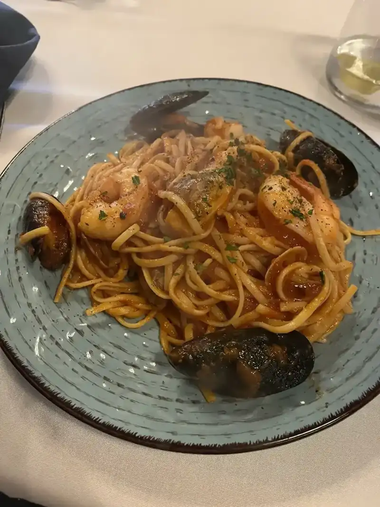
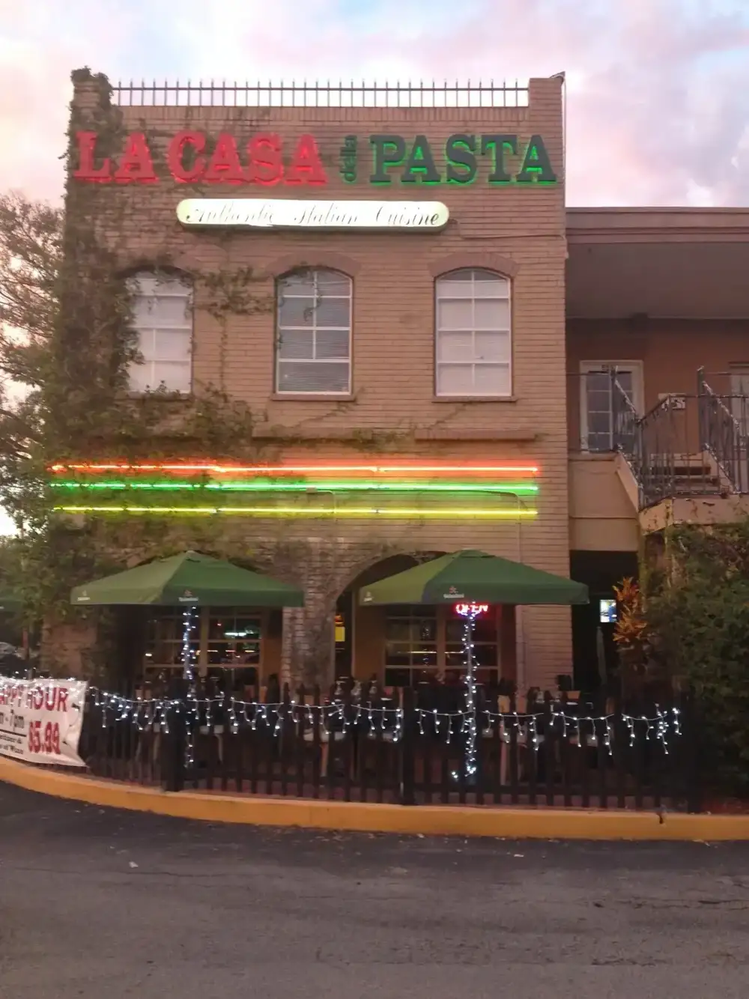
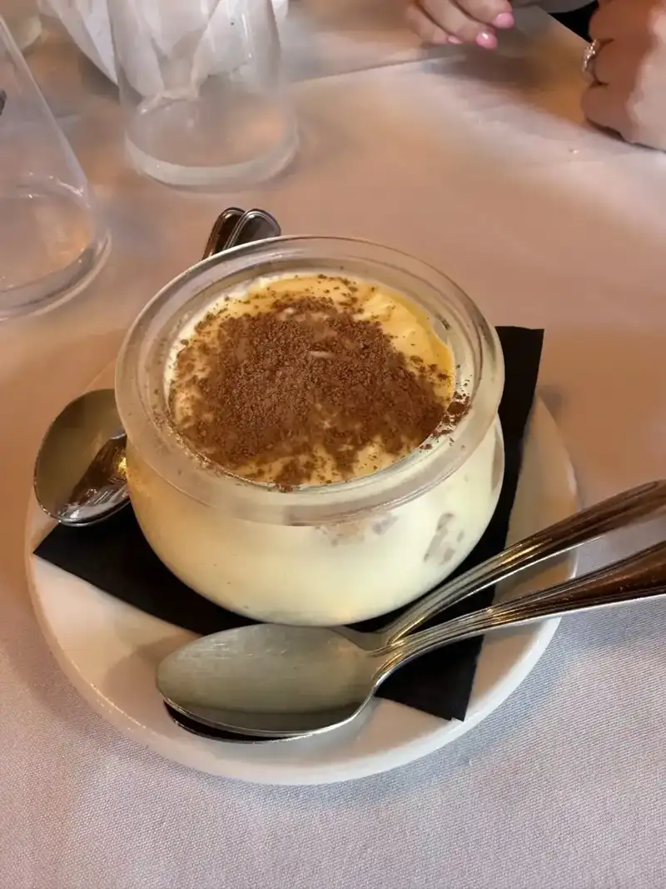
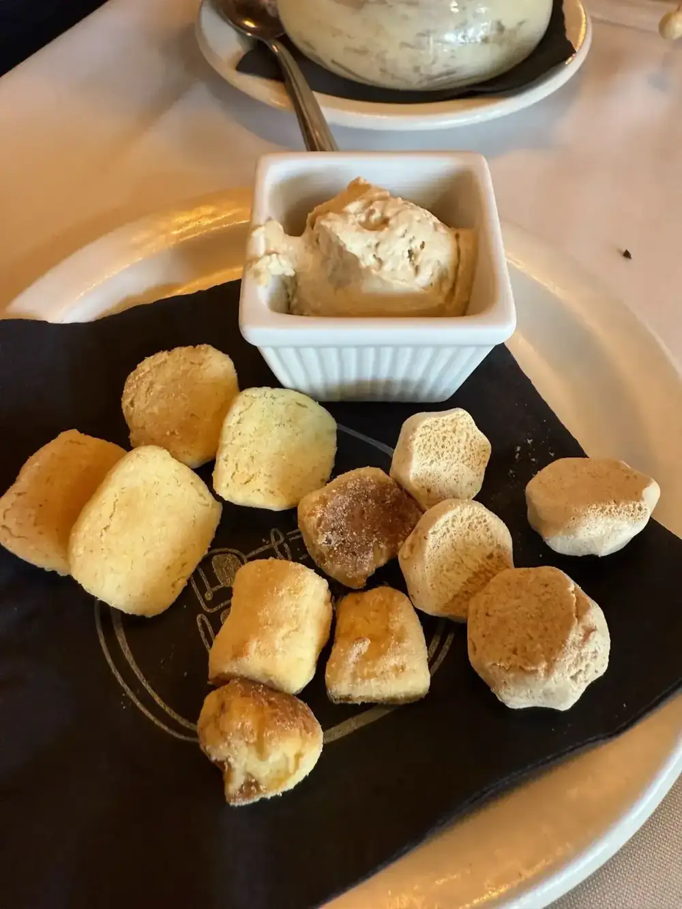
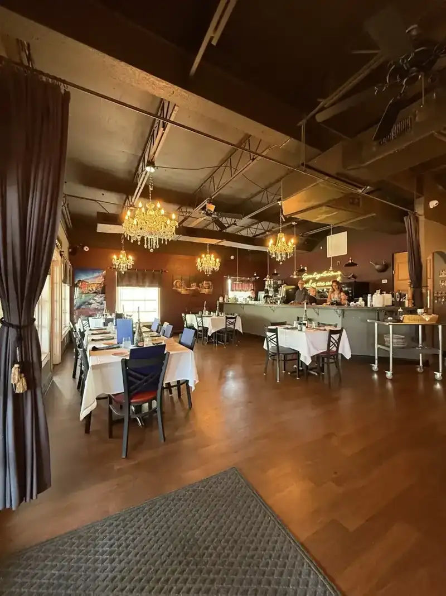

Pasta made in house
Fettuccine in a creamy sauce, and pasta prepared inside a Parmesan cheese wheel, made tableside by Franco.
Italian restaurant · Ehrlich Rd, Tampa

Hours Mon · ClosedTue · 5–9 PMWed · 5–9 PMThu · 5–9 PMFri · 5–9:30 PMSat · 5–9:30 PMSun · Closed
5273 Ehrlich Rd, Tampa, FL 33624
Homemade pasta and gnocchi, pasta tossed in a Parmesan wheel. Dinner Tuesday to Saturday.
What's on the table
Plates from our kitchen.
Fettuccine in a creamy sauce, and pasta prepared inside a Parmesan cheese wheel, made tableside by Franco.

Linguine with mussels in a rich red sauce, with deep, homey flavor.

Every pasta is homemade, gnocchi included. This one comes in a green sauce with shrimp.



4.5 ★ · 750 Google reviews
Delicious!!! Such an amazing and personable experience. We were celebrating a birthday and we were sat at a table that had a happy birthday card already on it! The appetizers were so delicious. We had a brie cheese wrapped in spec, both imported from Italy! Our servers were so friendly, and the owners even came to visit us at the table during our meal.
Such a great family restaurant. As a Sicilian and loving food. La Casa della Pasta is the closest thing to true Italian I’ve had in Tampa. You can tell how much work they put into their dishes.
Phenomenal service. Even better food. I grew up eating Italian and am often disappointed at most restaurants. This is the real deal. The depth of flavors felt like home. Everything was amazing. Espresso was perfect. We live near by and have passed this restaurant a million times. So thankful we finally tried it and can’t wait to go again! Grazie!

Our story
Mara and Franco bought the restaurant in 2017 and moved from the Langhe, in Piedmont, to Tampa. They love sharing the food and wine they know.
The owners come by your table. Pasta, gnocchi, cannoli and tiramisu are all made in house.
Visit
5273 Ehrlich Rd, Tampa, FL 33624
Reservations suggested through OpenTable. Takeout on UberEats or GrubHub. Closed Sunday and Monday.